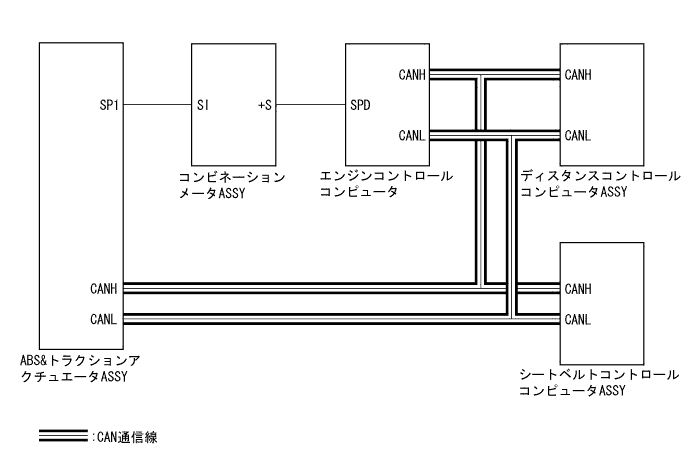

DTC B2059/31 Vehicle Speed Sensor Malfunction |
| DTC No. | DTC Detection Condition | Inspection Area |
|---|---|---|
| B2059/31 | The vehicle speed information from the engine control computer and ABS & traction actuator assembly differs by a certain amount or more |
|

)| Step 1 | Check DTC (EFI System) |
Using SST (TaSCAN), follow the prompts on the screen to display the "System Diagnosis Menu/TCCS" screen and select "DTC Freeze Data".
Check for DTCs.
| Result | Proceed to |
|---|---|
| DTC P0500 is not output | A |
| DTC P0500 is output | B |
|
| ||||
| A | |
| Step 2 | Read TaSCAN Data (Vehicle Speed) |
Using SST (TaSCAN), follow the prompts on the screen to display the "System Diagnosis Menu/ABS/VSC" screen, and select "ECU Data Monitor".
Perform a road test.
| Item Name (Symbol) | Item Description | Condition | Reference Value |
|---|---|---|---|
| Vehicle Speed | Indicates vehicle speed | Driving at a constant speed | No large fluctuations |
|
| ||||
| OK | |
| Step 3 | Read TaSCAN Data (Vehicle Speed) |
Using SST (TaSCAN), follow the prompts on the screen to display the "System Diagnosis Menu/TCCS" screen, and select "ECU Data Monitor".
Perform a road test.
| Item Name (Symbol) | Item Description | Condition | Reference Value |
|---|---|---|---|
| Vehicle speed (SPD1) | Indicates vehicle speed | Driving at a constant speed | Almost the same as meter vehicle speed |
|
| ||||
| OK | |
| Step 4 | Replace Seat Belt Control Computer |
Replace the seat belt control computer with a new one.
)| NEXT | |
| Step 5 | Check DTC |
Using SST (TaSCAN), follow the prompts on the screen to display the "System Diagnosis Menu/Pre-crash" screen, and select "DTC".
Select "Clear" on the screen to clear the data.
Follow the prompts on the SST (TaSCAN) screen to display the "System Diagnosis Menu/Pre-crash" screen, and select "DTC".
Check for DTCs again.
| Result | Proceed to |
|---|---|
| DTC B2059 is not output | A |
| DTC B2059 is output | B |
|
| ||||
| A | ||
| ||